assets/effects/arrow.png32 × 8
特效，由程序控制位置、旋转和淡出
共 257 张运行时图片。点击图片打开原文件；按原尺寸替换同名文件即可。UI 文字和动态数字保留为文本。面板切片 6px，避免修改最外侧 6px 的结构。
assets/effects/arrow.pngassets/effects/bolt.pngassets/effects/hit.pngassets/effects/rock.pngassets/effects/shadow.pngassets/effects/soldier-hit.pngassets/effects/swallow.pngassets/effects/thunder.pngassets/effects/water-ripple.pngassets/overlays/aura.pngassets/overlays/freeze.pngassets/overlays/gate-broken.png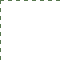
assets/overlays/grid.pngassets/overlays/hints/coins-tier-1.pngassets/overlays/hints/coins-tier-2.pngassets/overlays/hints/coins-tier-3.pngassets/overlays/hints/materials-tier-1.png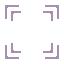
assets/overlays/hints/materials-tier-2.png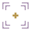
assets/overlays/hints/materials-tier-3.png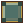
assets/overlays/level-badge.pngassets/overlays/links/commerce.pngassets/overlays/links/default.pngassets/overlays/links/farm.pngassets/overlays/links/industry.pngassets/overlays/links/silk.pngassets/overlays/placement.pngassets/overlays/pulse.png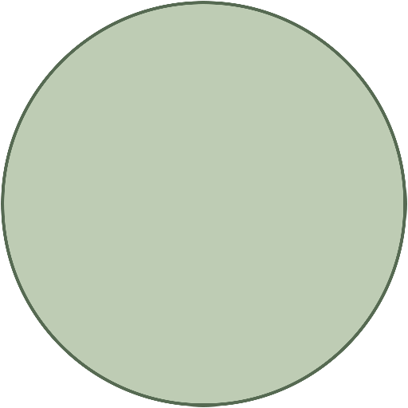
assets/overlays/range.pngassets/overlays/repair.pngassets/overlays/repel.pngassets/overlays/selection.pngassets/overlays/slow.pngassets/overlays/territory-edge.pngassets/overlays/territory-shade.png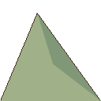
assets/scenery/mountain-1.png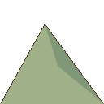
assets/scenery/mountain-2.png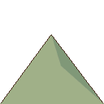
assets/scenery/mountain-3.png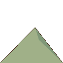
assets/scenery/mountain-4.pngassets/scenery/world-background.png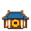
assets/sprites/buildings/bank/level-1.png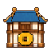
assets/sprites/buildings/bank/level-2.png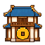
assets/sprites/buildings/bank/level-3.png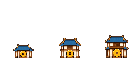
assets/sprites/buildings/bank/stages.png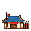
assets/sprites/buildings/barracks/level-1.png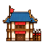
assets/sprites/buildings/barracks/level-2.png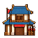
assets/sprites/buildings/barracks/level-3.png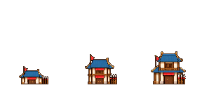
assets/sprites/buildings/barracks/stages.pngassets/sprites/buildings/earth/level-1.png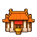
assets/sprites/buildings/earth/level-2.pngassets/sprites/buildings/earth/level-3.png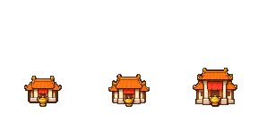
assets/sprites/buildings/earth/stages.png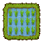
assets/sprites/buildings/farm/level-1.png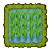
assets/sprites/buildings/farm/level-2.pngassets/sprites/buildings/farm/level-3.png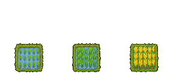
assets/sprites/buildings/farm/stages.pngassets/sprites/buildings/fortune/level-1.pngassets/sprites/buildings/fortune/level-2.pngassets/sprites/buildings/fortune/level-3.png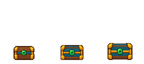
assets/sprites/buildings/fortune/stages.png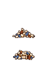
assets/sprites/buildings/gate/destroyed-ew.png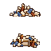
assets/sprites/buildings/gate/destroyed-preview-ew.png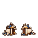
assets/sprites/buildings/gate/destroyed-preview.png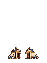
assets/sprites/buildings/gate/destroyed.pngassets/sprites/buildings/gate/level-1-ew.pngassets/sprites/buildings/gate/level-1.pngassets/sprites/buildings/gate/level-2-ew.pngassets/sprites/buildings/gate/level-2.png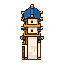
assets/sprites/buildings/gate/level-3-ew.pngassets/sprites/buildings/gate/level-3.png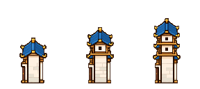
assets/sprites/buildings/gate/stages-ew.png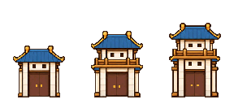
assets/sprites/buildings/gate/stages.pngassets/sprites/buildings/guild/level-1.pngassets/sprites/buildings/guild/level-2.pngassets/sprites/buildings/guild/level-3.png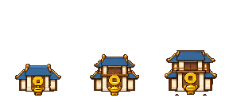
assets/sprites/buildings/guild/stages.png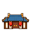
assets/sprites/buildings/inn/level-1.png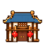
assets/sprites/buildings/inn/level-2.png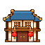
assets/sprites/buildings/inn/level-3.png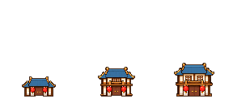
assets/sprites/buildings/inn/stages.png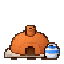
assets/sprites/buildings/kiln/level-1.png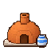
assets/sprites/buildings/kiln/level-2.png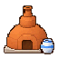
assets/sprites/buildings/kiln/level-3.png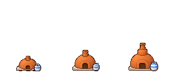
assets/sprites/buildings/kiln/stages.png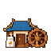
assets/sprites/buildings/mill/level-1.png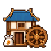
assets/sprites/buildings/mill/level-2.png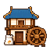
assets/sprites/buildings/mill/level-3.png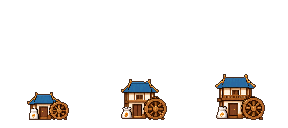
assets/sprites/buildings/mill/stages.pngassets/sprites/buildings/mulberry/level-1.png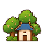
assets/sprites/buildings/mulberry/level-2.png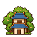
assets/sprites/buildings/mulberry/level-3.png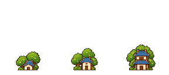
assets/sprites/buildings/mulberry/stages.png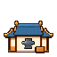
assets/sprites/buildings/port/level-1.png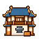
assets/sprites/buildings/port/level-2.pngassets/sprites/buildings/port/level-3.png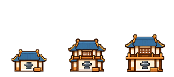
assets/sprites/buildings/port/stages.png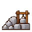
assets/sprites/buildings/quarry/level-1.pngassets/sprites/buildings/quarry/level-2.pngassets/sprites/buildings/quarry/level-3.pngassets/sprites/buildings/quarry/stages.pngassets/sprites/buildings/rock/level-1.pngassets/sprites/buildings/rock/level-2.pngassets/sprites/buildings/rock/level-3.pngassets/sprites/buildings/rock/stages.pngassets/sprites/buildings/shrine/level-1.pngassets/sprites/buildings/shrine/level-2.pngassets/sprites/buildings/shrine/level-3.pngassets/sprites/buildings/shrine/stages.pngassets/sprites/buildings/stage/level-1.pngassets/sprites/buildings/stage/level-2.pngassets/sprites/buildings/stage/level-3.pngassets/sprites/buildings/stage/stages.pngassets/sprites/buildings/tailor/level-1.pngassets/sprites/buildings/tailor/level-2.pngassets/sprites/buildings/tailor/level-3.pngassets/sprites/buildings/tailor/stages.pngassets/sprites/buildings/tao/level-1.pngassets/sprites/buildings/tao/level-2.pngassets/sprites/buildings/tao/level-3.pngassets/sprites/buildings/tao/stages.pngassets/sprites/buildings/tea/level-1.pngassets/sprites/buildings/tea/level-2.pngassets/sprites/buildings/tea/level-3.pngassets/sprites/buildings/tea/stages.pngassets/sprites/buildings/tower/level-1.pngassets/sprites/buildings/tower/level-2.pngassets/sprites/buildings/tower/level-3.pngassets/sprites/buildings/tower/stages.png
assets/sprites/buildings/trade/level-1.pngassets/sprites/buildings/trade/level-2.png
assets/sprites/buildings/trade/level-3.pngassets/sprites/buildings/trade/stages.pngassets/sprites/buildings/weaver/level-1.pngassets/sprites/buildings/weaver/level-2.pngassets/sprites/buildings/weaver/level-3.pngassets/sprites/buildings/weaver/stages.pngassets/sprites/buildings/well/level-1.pngassets/sprites/buildings/well/level-2.pngassets/sprites/buildings/well/level-3.pngassets/sprites/buildings/well/stages.pngassets/sprites/buildings/wine/level-1.pngassets/sprites/buildings/wine/level-2.pngassets/sprites/buildings/wine/level-3.pngassets/sprites/buildings/wine/stages.pngassets/sprites/buildings/zhong/level-1.pngassets/sprites/buildings/zhong/level-2.pngassets/sprites/buildings/zhong/level-3.pngassets/sprites/buildings/zhong/stages.pngassets/sprites/soldiers/archer_ally-green.pngassets/sprites/soldiers/archer_enemy-purple.pngassets/sprites/soldiers/archer_player-red.pngassets/sprites/soldiers/cavalry_ally-green.pngassets/sprites/soldiers/cavalry_enemy-purple.pngassets/sprites/soldiers/cavalry_player-red.pngassets/sprites/soldiers/infantry_ally-green.pngassets/sprites/soldiers/infantry_enemy-purple.pngassets/sprites/soldiers/infantry_player-red.pngassets/tiles/resources/border-tree.pngassets/tiles/resources/forest.pngassets/tiles/resources/mountain.pngassets/tiles/resources/reeds.pngassets/tiles/roads/bridge-00.pngassets/tiles/roads/bridge-01.pngassets/tiles/roads/bridge-02.pngassets/tiles/roads/bridge-03.pngassets/tiles/roads/bridge-04.pngassets/tiles/roads/bridge-05.pngassets/tiles/roads/bridge-06.pngassets/tiles/roads/bridge-07.pngassets/tiles/roads/bridge-08.pngassets/tiles/roads/bridge-09.pngassets/tiles/roads/bridge-0a.pngassets/tiles/roads/bridge-0b.pngassets/tiles/roads/bridge-0c.pngassets/tiles/roads/bridge-0d.pngassets/tiles/roads/bridge-0e.pngassets/tiles/roads/bridge-0f.pngassets/tiles/roads/ground-00.pngassets/tiles/roads/ground-01.pngassets/tiles/roads/ground-02.pngassets/tiles/roads/ground-03.pngassets/tiles/roads/ground-04.pngassets/tiles/roads/ground-05.pngassets/tiles/roads/ground-06.pngassets/tiles/roads/ground-07.pngassets/tiles/roads/ground-08.pngassets/tiles/roads/ground-09.pngassets/tiles/roads/ground-0a.pngassets/tiles/roads/ground-0b.pngassets/tiles/roads/ground-0c.pngassets/tiles/roads/ground-0d.pngassets/tiles/roads/ground-0e.pngassets/tiles/roads/ground-0f.pngassets/tiles/terrain/forest.pngassets/tiles/terrain/mountain.pngassets/tiles/terrain/plain.pngassets/tiles/terrain/shore.pngassets/tiles/terrain/water.pngassets/tiles/walls/00.pngassets/tiles/walls/01.pngassets/tiles/walls/02.pngassets/tiles/walls/03.pngassets/tiles/walls/04.pngassets/tiles/walls/05.pngassets/tiles/walls/06.pngassets/tiles/walls/07.pngassets/tiles/walls/08.pngassets/tiles/walls/09.pngassets/tiles/walls/0a.pngassets/tiles/walls/0b.pngassets/tiles/walls/0c.pngassets/tiles/walls/0d.pngassets/tiles/walls/0e.pngassets/tiles/walls/0f.pngassets/ui/backgrounds/dimmer.pngassets/ui/backgrounds/paper.png
assets/ui/backgrounds/title-town.pngassets/ui/bars/health-building.pngassets/ui/bars/health-critical.pngassets/ui/bars/health-enemy.pngassets/ui/bars/health-player.pngassets/ui/bars/health-track.pngassets/ui/controls/switch-off.pngassets/ui/controls/switch-on.pngassets/ui/icons/arrow-right.pngassets/ui/icons/close.pngassets/ui/icons/coin.pngassets/ui/icons/coop.pngassets/ui/icons/diamond.pngassets/ui/icons/grip.pngassets/ui/icons/invasion.pngassets/ui/icons/load.pngassets/ui/icons/materials.pngassets/ui/icons/repair.pngassets/ui/icons/repel.pngassets/ui/icons/single.pngassets/ui/icons/sound-off.pngassets/ui/icons/sound-on.pngassets/ui/icons/thunder.pngassets/ui/icons/upgrade.pngassets/ui/panels/ally.pngassets/ui/panels/card.pngassets/ui/panels/danger.pngassets/ui/panels/dark.pngassets/ui/panels/disabled.pngassets/ui/panels/enemy.pngassets/ui/panels/inset.pngassets/ui/panels/map-ally.pngassets/ui/panels/map-enemy.pngassets/ui/panels/map-paper.pngassets/ui/panels/map-primary.pngassets/ui/panels/night.pngassets/ui/panels/ornament-border.pngassets/ui/panels/paper.pngassets/ui/panels/primary.pngassets/ui/panels/seal.pngassets/ui/panels/secondary.pngassets/ui/panels/warning.png